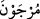
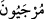
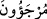
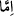

“Başka bir takımları da var ki” yani Medine halkından ve çevresindeki bedevî
Araplardan, yukarıda zikredilen ve günahlarını itiraf edenlerin dışında savaştan geri
kalan diğer bir topluluk da var ki onlar “Allah’ın emrine bırakılmışlardır.” Allah
kendileri hakkında dilediği hükmü indirene kadar onlara mühlet verilmiş, te’hir edilmiş
kimselerdir
“ __WORD__ ” kelimesini kırâat imamlarından Nâfi’, Hamza, Kisâî ve Hafs, bu şekilde
vâv ile “mürcevne” şeklinde okumuşlardır. Bu kıraate göre kelimenin aslı “yâ” ile “__WORD__” dir. Diğer kıraat imamları ise hemze ile “__WORD__” şeklinde okumuşlardır. Bu
kelime “te’hir etmek” mânâsınadır.
el-Muğrib’de kaydedildiğine göre bu kelimeden türeme olan Mürcie, büyük günah
işleyenlerin affedilme veya cezalandırılmaları konusunda kesin bir şey söylemeyen, bu
konudaki hükmü ircâ eden, yani kıyamet gününe te’hir eden bir fırkadır.
Eğer bulundukları hal üzere kalırlarsa, yâni bir an önce tevbe etmez ve münâfıklık
ederek mazeret beyan ederlerse Allah “onlara ya azab eder” Çünkü onlar samimi
değildiler. “ya da” niyetleri halis, tevbeleri de sağlam olursa “tevbelerini kabul eder.”
Yani, onlardan ya azap görecek ya da tevbeleri kabul edilecek durumda olanlar vardır.”
“__WORD__ (ya, ya da)” edatı, şüphe ifade eder. Allah Teâlâ ise şek ve şüpheden münezzehtir.
Çünkü O, onların durumlarının sonunda ne olacağını bilir.” dersen ben buna şöyle cevap
veririm: Buradaki şüphe, kullara râcîdir. “Onların durumu sizin yanınızda korku ile ümit
arasında olsun.” mânâsına gelmektedir.
Ebu’l-Bakâ demiştir ki: “ __WORD__ ” edatı şüphe bildirmek için olduğunda, kendisinden
sonra isim de gelebilir fiil de. Eğer tercih (tahyîr) için olursa “Ey Mûsâ, sen mi
atacaksın, yoksa biz mi?” (el-A‘râf, 7/115; Tâhâ, 20/65) âyetinde olduğu gibi,
kendisinden sonra “en” edatı ile birlikte bir fiil gelir.
“Allah” onların hallerini “en iyi bilendir”, durumları hakkındaki hükmü te’hir etmek
de dahil, onlara yaptığı şeylerde “hüküm ve hikmet sahibidir.”
Bu âyet, Tebük savaşına gitmeyen üç kişi hakkında inmiştir. Bunlar, Ka‘b b. Mâlik,
Mürâre b. Rebî’ Ömerî ve Hilâl b. Ümeyye’dir. Bunlar Bedir savaşına iştirak
edenlerdendiler. Maddi durumları da iyiydi. Buna rağmen Tebük savaşında Rasûlullah
(s.a.)’den geride kalmışlardı.
Ka‘b b. Mâlik kendi kendine: “Medine’de en iyi cins deveye sahip olan benim. Ne
zaman istesem İslâm ordusuna yetişirim.” demiş, birkaç gün gecikmiş, ondan sonra da
İslâm ordusuna yetişmekten ümidini kesmişti. Ardından da yaptığına pişman olmuştu.
Diğer iki arkadaşı da aynı şekilde hareket etmişlerdi. Fakat bunlar, Ebû Lübâbe ve
arkadaşlarının yaptığı gibi kendilerini mescidin direklerine bağlamamışlar, üzüntü ve
kederlerini ortaya koymamışlardı.
Bu âyet indikten sonra Rasûlullah (s.a.) onların hükmünü durdurdu. Müslümanları
onlarla oturmaktan, birlikte yiyip içmekten nehyetti. Eşlerinden ayrılmalarını ve onları
ailelerine göndermelerini emretti. Hilâl’in hanımı Peygamber Efendimiz’e gelip çok
yaşlı olduğu için kocasına yemeğini getirmek için müsâade istedi. Hz. Peygamber (a.s.)